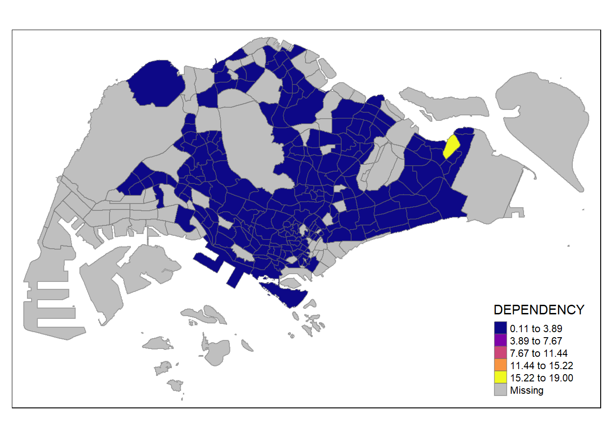
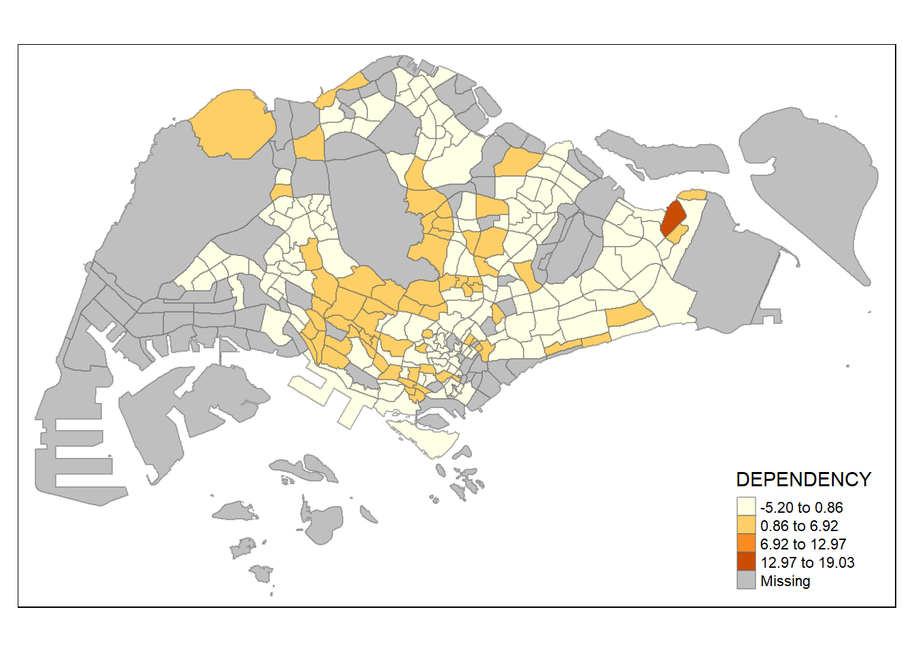

pacman::p_load(sf, tmap, tidyverse)Hands-on Exercise 2
Choropleth Mapping and GeoVisualisation with R
1. Getting Started
Thematic mapping involves the use of map symbols to visualize selected properties of geographic features that are not naturally visible, such as population, temperature, crime rate, and property prices.
Geovisualisation works by providing graphical ideation to render a place, phenomenon or a process.
In this hands-on exercise, I will learn how to plot functional and truthful chloropleth maps by using the tmap R package. The output of this exercise should look like thisL
2. Let’s Set Up!
2.1 Importing Libraries into R
In this hands-on exercise, the key R package use is tmap package in R, alongside these four other R packages:
- readr for importing delimited text file,
- tidyr for tidying data,
- dplyr for wrangling data and
- sf for handling geospatial data.
Among the four packages, readr, tidyr and dplyr are part of tidyverse package. Hence, we will only need to install the tidyverse package.
Now, let’s install and load these packages in RStudio.
2.2 Download Data and Set Up Folders
We will be using two data sets to create the choropleth maps
1) Master Plan 2014 Subzone Boundary (Web): geospatial data consisting of the geographical boundary of Singapore at the planning subzone level.
üìÖ The data is based on URA Master Plan 2014.
üìÅ ESRI shapefile format (i.e. MP14_SUBZONE_WEB_PL)
üîó Can be downloaded at data.gov.sg
2) Singapore Residents by Planning Area / Subzone, Age Group, Sex and Type of Dwelling: aspatial data file. Although it does not contain any coordinates values, the PA and SZ fields can be used as unique identifiers to geocode to MP14_SUBZONE_WEB_PL shapefile.
üìÖ June 2011-2020
üìÅ csv format (i.e. respopagesextod2011to2020.csv)
üîó Can be downloaded at Department of Statistics, Singapore
This is the file structure for containing the data files that I have extracted.
2.3 Importing Data into R
2.3.1 Importing Geospatial Data into R
Now, we’ll use the st_read() function of sf package to import MP14_SUBZONE_WEB_PL shapefile into R as a simple feature data frame called mpsz.
# Import shapefile
mpsz <- st_read(dsn = "data/geospatial", layer = "MP14_SUBZONE_WEB_PL")Reading layer `MP14_SUBZONE_WEB_PL' from data source
`C:\SamanthaxFoo\IS415-GAA\Hands-on_Ex\Hands-on_Ex2\data\geospatial'
using driver `ESRI Shapefile'
Simple feature collection with 323 features and 15 fields
Geometry type: MULTIPOLYGON
Dimension: XY
Bounding box: xmin: 2667.538 ymin: 15748.72 xmax: 56396.44 ymax: 50256.33
Projected CRS: SVY21# Inspect shapefile
mpszSimple feature collection with 323 features and 15 fields
Geometry type: MULTIPOLYGON
Dimension: XY
Bounding box: xmin: 2667.538 ymin: 15748.72 xmax: 56396.44 ymax: 50256.33
Projected CRS: SVY21
First 10 features:
OBJECTID SUBZONE_NO SUBZONE_N SUBZONE_C CA_IND PLN_AREA_N
1 1 1 MARINA SOUTH MSSZ01 Y MARINA SOUTH
2 2 1 PEARL'S HILL OTSZ01 Y OUTRAM
3 3 3 BOAT QUAY SRSZ03 Y SINGAPORE RIVER
4 4 8 HENDERSON HILL BMSZ08 N BUKIT MERAH
5 5 3 REDHILL BMSZ03 N BUKIT MERAH
6 6 7 ALEXANDRA HILL BMSZ07 N BUKIT MERAH
7 7 9 BUKIT HO SWEE BMSZ09 N BUKIT MERAH
8 8 2 CLARKE QUAY SRSZ02 Y SINGAPORE RIVER
9 9 13 PASIR PANJANG 1 QTSZ13 N QUEENSTOWN
10 10 7 QUEENSWAY QTSZ07 N QUEENSTOWN
PLN_AREA_C REGION_N REGION_C INC_CRC FMEL_UPD_D X_ADDR
1 MS CENTRAL REGION CR 5ED7EB253F99252E 2014-12-05 31595.84
2 OT CENTRAL REGION CR 8C7149B9EB32EEFC 2014-12-05 28679.06
3 SR CENTRAL REGION CR C35FEFF02B13E0E5 2014-12-05 29654.96
4 BM CENTRAL REGION CR 3775D82C5DDBEFBD 2014-12-05 26782.83
5 BM CENTRAL REGION CR 85D9ABEF0A40678F 2014-12-05 26201.96
6 BM CENTRAL REGION CR 9D286521EF5E3B59 2014-12-05 25358.82
7 BM CENTRAL REGION CR 7839A8577144EFE2 2014-12-05 27680.06
8 SR CENTRAL REGION CR 48661DC0FBA09F7A 2014-12-05 29253.21
9 QT CENTRAL REGION CR 1F721290C421BFAB 2014-12-05 22077.34
10 QT CENTRAL REGION CR 3580D2AFFBEE914C 2014-12-05 24168.31
Y_ADDR SHAPE_Leng SHAPE_Area geometry
1 29220.19 5267.381 1630379.3 MULTIPOLYGON (((31495.56 30...
2 29782.05 3506.107 559816.2 MULTIPOLYGON (((29092.28 30...
3 29974.66 1740.926 160807.5 MULTIPOLYGON (((29932.33 29...
4 29933.77 3313.625 595428.9 MULTIPOLYGON (((27131.28 30...
5 30005.70 2825.594 387429.4 MULTIPOLYGON (((26451.03 30...
6 29991.38 4428.913 1030378.8 MULTIPOLYGON (((25899.7 297...
7 30230.86 3275.312 551732.0 MULTIPOLYGON (((27746.95 30...
8 30222.86 2208.619 290184.7 MULTIPOLYGON (((29351.26 29...
9 29893.78 6571.323 1084792.3 MULTIPOLYGON (((20996.49 30...
10 30104.18 3454.239 631644.3 MULTIPOLYGON (((24472.11 29...üîé Observations: The
MP14_SUBZONE_WEB_PLdata set consists of 323 features and 15 fields made up of multipolygon features.
2.3.2 Importing Aspatial (Attribute) Data into R
For aspatial datasets like respopagsex2011to2020.csv, we will import into Rstudio using read_csv() function of readr package.
popdata <- read_csv("data/aspatial/respopagesextod2011to2020.csv")Rows: 984656 Columns: 7
── Column specification ────────────────────────────────────────────────────────
Delimiter: ","
chr (5): PA, SZ, AG, Sex, TOD
dbl (2): Pop, Time
ℹ Use `spec()` to retrieve the full column specification for this data.
ℹ Specify the column types or set `show_col_types = FALSE` to quiet this message.üîé Observations: The
respopagsex2011to2020.csvdata follows the SVY21 projected coordinate which contains 984656 rows and 7 columns
3. Data Preparation and Wrangling
Before a thematic map can be prepared, we will need to prepare a data table with values from 2020 which includes these variables:
- YOUNG: age group 0 to 4 until age group 20 to 24,
- ECONOMY ACTIVE: age group 25-29 until age group 60-64,
- AGED: age group 65 and above,
- TOTAL: all age group, and
- DEPENDENCY: the ratio between young and aged against economy active group
3.1 Data Wrangling
In order to carry out necessary data wrangling and transformation, the following functions will be used:
pivot_wider()of tidyr package, andmutate(),filter(),group_by()andselect()of dplyr package
popdata2020 <- popdata %>%
filter(Time == 2020) %>%
group_by(PA, SZ, AG) %>%
summarise(`POP` = sum(`Pop`)) %>%
ungroup()%>%
pivot_wider(names_from=AG,
values_from=POP) %>%
mutate(YOUNG = rowSums(.[3:6])
+rowSums(.[12])) %>%
mutate(`ECONOMY ACTIVE` = rowSums(.[7:11])+
rowSums(.[13:15]))%>%
mutate(`AGED`=rowSums(.[16:21])) %>%
mutate(`TOTAL`=rowSums(.[3:21])) %>%
mutate(`DEPENDENCY` = (`YOUNG` + `AGED`)
/`ECONOMY ACTIVE`) %>%
select(`PA`, `SZ`, `YOUNG`,
`ECONOMY ACTIVE`, `AGED`,
`TOTAL`, `DEPENDENCY`)`summarise()` has grouped output by 'PA', 'SZ'. You can override using the
`.groups` argument.üîé Observations: Notice that we have filtered our population data from 2020 and successfully grouped them by PA, SZ and AG which sums up the population within each category. I‚Äôve also summed up the rows for
ECONOMY ACTIVE,AGEDandTOTAL, and created a newDEPENDENCYcolumn which takes the sum ofYOUNGandAGED, and then divide that sum by the value ofECONOMY ACTIVE.
3.2 Joining Geospatial Data and Attribute Data
Before we can perform the georelational join, we are required to convert the values in PA and SZ fields to uppercase to ensure consistency with the uppercase values in SUBZONE_N and PLN_AREA_N.
Hence, we will standardise the data values in these two fields.
# Convert to uppercase
popdata2020 <- popdata2020 %>%
mutate_at(.vars = vars(PA, SZ),
.funs = list(toupper)) %>%
filter(`ECONOMY ACTIVE` > 0)Next, left_join() of dplyr is used to join the geographical data and attribute table using planning subzone name e.g. SUBZONE_N and SZ as the common identifier.
mpsz_pop2020 <- left_join(mpsz, popdata2020,
by = c("SUBZONE_N" = "SZ"))4. Choropleth Mapping Geospatial Data Using tmap
Choropleth mapping involves the symbolisation of enumeration units, such as countries, provinces, states, counties or census units, using area patterns or graduated colors.
üìñ Scenario: A social scientist may need to use a choropleth map to portray the spatial distribution of aged population of Singapore by Master Plan 2014 Subzone Boundary.
Two approaches can be used to prepare thematic map using tmap, they are:
- Plotting a thematic map quickly by using
qtm(). - Plotting highly customisable thematic map by using
tmapelements, i.e.tm_shape()
4.1 Method 1: Plotting a Choropleth Map quickly using qtm()
The easiest and quickest to draw a choropleth map using tmap is using qtm(). It is concise and provides a good default visualisation in many cases.
# Plot choropleth map using qtm()
tmap_mode("plot")tmap mode set to plottingqtm(mpsz_pop2020,
fill = "DEPENDENCY")
üí° Note:
- tmap_mode() with “plot” option is used to produce a static map. For interactive mode, “view” option should be used.
- fill argument is used to map the attribute (i.e. DEPENDENCY)
4.2 Method 2: Plotting a Choropleth Map quickly using tm_shape()
# Plot choropleth map using tmap's elements
tm_shape(mpsz_pop2020)+
tm_fill("DEPENDENCY",
style = "quantile",
palette = "Blues",
title = "Dependency ratio") +
tm_layout(main.title = "Distribution of Dependency Ratio by planning subzone",
main.title.position = "center",
main.title.size = 1.2,
legend.height = 0.45,
legend.width = 0.35,
frame = TRUE) +
tm_borders(alpha = 0.5) +
tm_compass(type="8star", size = 2) +
tm_scale_bar() +
tm_grid(alpha =0.2) +
tm_credits("Source: Planning Sub-zone boundary from Urban Redevelopment Authorithy (URA)\n and Population data from Department of Statistics DOS",
position = c("left", "bottom"))
Step 1: Drawing a Base Map Using tm_shape()
The basic building block of tmap is tm_shape() followed by one or more layer elemments such as tm_fill() and tm_polygons().
tm_shape(mpsz_pop2020) + tm_polygons()
üí° Note:
tm_shape()is used to define the input data (i.e mpsz_pop2020) andtm_polygons()is used to draw the planning subzone polygons.
Step 2: Drawing a Choropleth Map Using tm_polygons()
To draw a choropleth map showing the geographical distribution of a selected variable by planning subzone, we just need to assign the target variable such as Dependency to tm_polygons().
tm_shape(mpsz_pop2020) + tm_polygons("DEPENDENCY")
Step 3: Drawing a Choropleth Map Using tm_fill() and tm_border()
Firstly, we will try to draw a choropleth map by using tm_fill() alone.
üí° Note: tm_polygons() is a wrapper of tm_fill() and tm_border()
tm_fill() shades the polygons by using the default colour scheme and tm_borders() adds the borders of the shapefile onto the choropleth map.
# Add fill
tm_shape(mpsz_pop2020)+
tm_fill("DEPENDENCY")
To add the boundary of the planning subzones, tm_borders will be used as shown below.
# Add boundary
tm_shape(mpsz_pop2020)+
tm_fill("DEPENDENCY") +
tm_borders(lwd = 0.1, alpha = 1)
üí° Note: Notice that light-gray border lines have been added on the choropleth map.
The alpha argument is used to define transparency number between 0 (totally transparent) and 1 (not transparent). Default alpha value is 1.
Beside alpha argument, there are three other arguments for tm_borders(), they are:
col = border colour,
lwd = border line width (default is 1)
lty = border line type (default is “solid”)
5. Data Classification Methods of tmap
Most choropleth maps employ some methods of data classification. The point of classification is to take a large number of observations and group them into data ranges or classes.
tmap provides a total ten data classification methods, namely:
- fixed,
- sd,
- equal,
- pretty (default),
- quantile,
- kmeans,
- hclust,
- bclust,
- fisher,
- jenks.
5.1 Plotting Choropleth Maps with Built-in Classification Methods
To define a data classification method, the style argument of tm_fill() or tm_polygons() will be used. The code chunks below uses 5 classes where, n = 5.
üí° There are 10 types of styles: jenks, equal, fixed, sd, pretty (default), quantile, kmeans, fisher, hclust and bclust
1) jenks
Firstly, we’ll use the jenks style method. It is known as natural breaks and is based on natural groupings inherent in the data. Data is clustered into groups that minimise the within-group variance and maximise the between-group variance.
tm_shape(mpsz_pop2020)+
tm_fill("DEPENDENCY",
n = 5,
palette = "plasma",
style = "jenks") +
tm_borders(alpha = 0.5)2) equal
Next, we will try equal data classification method. This creates a more even distribution as shown.
tm_shape(mpsz_pop2020)+
tm_fill("DEPENDENCY",
n = 5,
palette = "plasma",
style = "equal") +
tm_borders(alpha = 0.5)
üí° Note: not compatible for data that are highly-skewed or with one or two large outliers
3) sd
tm_shape(mpsz_pop2020)+
tm_fill("DEPENDENCY",
n=5,
style="sd") +
tm_borders(alpha=0.5)
üí° Note: Should only use if the distribution resembles a normal distribution (bell-curve)!
4) kmeans
tm_shape(mpsz_pop2020)+
tm_fill("DEPENDENCY",
n=5,
style="kmeans") +
tm_borders(alpha=0.5)
5) fisher
tm_shape(mpsz_pop2020)+
tm_fill("DEPENDENCY",
n=5,
style="fisher") +
tm_borders(alpha=0.5)
üí° Note: At a glance, using Fisher and KMeans lead to similar visualisations.
4) hclust
hclust is hierarchical clustering used to create a hierarchy of clusters based on their similarity. Each data point starts as an individual cluster and then progressively merges or splits clusters until a stopping criterion is met.
tm_shape(mpsz_pop2020)+
tm_fill("DEPENDENCY",
n=5,
style="hclust") +
tm_borders(alpha=0.5)
5) bclust
bclust is bagged clustering which creates multiple subsets of the original dataset through resampling. Each subset is then used to train an individual clustering model, and the final cluster assignments are obtained by combining the results from all models.
tm_shape(mpsz_pop2020)+
tm_fill("DEPENDENCY",
n=5,
style="bclust") +
tm_borders(alpha=0.5)Committee Member: 1(1) 2(1) 3(1) 4(1) 5(1) 6(1) 7(1) 8(1) 9(1) 10(1)
Computing Hierarchical Clustering5.2 Plotting Choropleth Maps with Custom Breaks
For all the built-in styles, the category breaks are computed internally. In order to override these defaults, the breakpoints can be set explicitly by means of the breaks argument in tm_fill().
üí° Note: in tmap, the breaks include a minimum and maximum. As a result, in order to end up with n categories, n+1 elements must be specified in the breaks option (the values must be in increasing order).
Before we get started, it is always a good practice to get some descriptive statistics on the variable before setting the break points.
summary(mpsz_pop2020$DEPENDENCY) Min. 1st Qu. Median Mean 3rd Qu. Max. NA's
0.1111 0.7147 0.7866 0.8585 0.8763 19.0000 92 Looking at the summary statistics, the break point can be set to 0.60, 0.70, 0.80, and 0.90. The minimum and maximum breaks must also be included, which are 0 and 100 respectively.
# Using this information, we will now proceed to plot the choropleth map.
tm_shape(mpsz_pop2020)+
tm_fill("DEPENDENCY",
palette="plasma",
breaks = c(0, 0.60, 0.70, 0.80, 0.90, 1.00)) +
tm_borders(alpha = 0.5)Warning: Values have found that are higher than the highest breaküí° Observations: the legend has now been categorised according to the breaks vector,
c(0, 0.60, 0.70, 0.80, 0.90, 1.00).
5.3 Customising Colour Schemes
tmap supports colour ramps either defined by the user or a set of predefined colour ramps from the RColorBrewer package.
To change the colour, we assign the preferred colour to the palette argument of tm_fill() as shown below.
tm_shape(mpsz_pop2020)+
tm_fill("DEPENDENCY",
n = 6,
style = "quantile",
palette = "plasma") +
tm_borders(alpha = 0.5)Add a “-” prefix to reverse the colour shading.
tm_shape(mpsz_pop2020)+
tm_fill("DEPENDENCY",
style = "quantile",
palette = "-Greens") +
tm_borders(alpha = 0.5)
6. Controlling and Customising Map Layouts
6.1 Map Legend
In tmap, several legend options are provided to change the placement, format and appearance of the legend.
tm_shape(mpsz_pop2020)+
tm_fill("DEPENDENCY",
style = "jenks",
palette = "plasma",
legend.hist = TRUE,
legend.is.portrait = TRUE,
legend.hist.z = 0.1) +
tm_layout(main.title = "Distribution of Dependency Ratio by planning subzone \n(Jenks classification)",
main.title.position = "center",
main.title.size = 1,
#legend.height = 0.45,
#legend.width = 0.35,
legend.outside = TRUE,
legend.position = c("right", "bottom"),
frame = FALSE) +
tm_borders(alpha = 0.5)6.2 Map Style
The layout of the map can also be adjusted using tmap_style(). E.g. Classic
tm_shape(mpsz_pop2020)+
tm_fill("DEPENDENCY",
style = "quantile",
palette = "-Greens") +
tm_borders(alpha = 0.5) +
tmap_style("classic")tmap style set to "classic"other available styles are: "white", "gray", "natural", "cobalt", "col_blind", "albatross", "beaver", "bw", "watercolor" 
üí° Observations: the classic tmap style creates a border with double lines, the colours used are more muted and neutral, and the font has been changed to something more elegant
6.3 Cartographic Furniture
tmap also provides arguments to draw other important map elements like compass, scale bar and grid lines.
To add compass, scale and gridlines, pay attention to how tm_compass(), tm_scale_bar() and tm_grid() are used.
tm_shape(mpsz_pop2020)+
tm_fill("DEPENDENCY",
style = "quantile",
palette = "plasma",
title = "No. of persons") +
tm_layout(main.title = "Distribution of Dependency Ratio \nby planning subzone",
main.title.position = "center",
main.title.size = 1.2,
legend.height = 0.45,
legend.width = 0.35,
frame = TRUE) +
tm_borders(alpha = 0.5) +
tm_compass(type="8star", size = 2) +
tm_scale_bar(width = 0.15) +
tm_grid(lwd = 0.1, alpha = 0.2) +
tm_credits("Source: Planning Sub-zone boundary from Urban Redevelopment Authorithy (URA)\n and Population data from Department of Statistics DOS",
position = c("left", "bottom"))6.4 Drawing Small Multiple Choropleth Maps
Small multiple maps, also referred as facet maps, comprise of many adjacent maps. These facets enable easier visualisation of how spatial relationships change with respect to another variable. Such as, time.
In tmap, small multiple maps can be plotted in three ways:
- by assigning multiple values to at least one of the asthetic arguments,
- by defining a group-by variable in
tm_facets(), and - by creating multiple stand-alone maps with
tmap_arrange().
Method 1: By assigning multiple values to at least one of the aesthetic arguments
In this example, small multiple choropleth maps are created by defining ncols in tm_fill()
tm_shape(mpsz_pop2020)+
tm_fill(c("YOUNG", "AGED"),
style = "equal",
palette = "plasma") +
tm_layout(legend.position = c("right", "bottom")) +
tm_borders(alpha = 0.5) +
tmap_style("white")tmap style set to "white"other available styles are: "gray", "natural", "cobalt", "col_blind", "albatross", "beaver", "bw", "classic", "watercolor" üí° Observations: two choropleth maps been generated to represent the Young and Aged demographics respectively.
Additionally, the style and palette arguments can be adjusted accordingly.
tm_shape(mpsz_pop2020)+
tm_polygons(c("DEPENDENCY","AGED"),
style = c("equal", "quantile"),
palette = list("Blues","Greens")) +
tm_layout(legend.position = c("right", "bottom"))
Method 2: By defining a group-by variable in tm_facets()
tm_facets() can help to group categorical data like regions and subzone areas such that the generated facet maps will zoom in to the specified variable.
tm_shape(mpsz_pop2020) +
tm_fill("DEPENDENCY",
style = "quantile",
palette = "Blues",
thres.poly = 0) +
tm_facets(by="REGION_N",
free.coords=TRUE,
drop.shapes=TRUE) +
tm_layout(legend.show = FALSE,
title.position = c("center", "center"),
title.size = 20) +
tm_borders(alpha = 0.5)Warning: The argument drop.shapes has been renamed to drop.units, and is
therefore deprecated
üí° Observations: we have generated 5 different choropleth maps that represent the 5 unique regions found in the
REGION_Ndata variable!
Method 3: By creating multiple stand-alone maps with tmap_arrange()
In this example, multiple small choropleth maps are created by creating multiple stand-alone maps with tmap_arrange().
youngmap <- tm_shape(mpsz_pop2020)+
tm_polygons("YOUNG",
style = "quantile",
palette = "viridis")
agedmap <- tm_shape(mpsz_pop2020)+
tm_polygons("AGED",
style = "quantile",
palette = "plasma")
tmap_arrange(youngmap, agedmap, asp=1, ncol=2)üí° Observations: as compared to the charts generated in Method 1, writing two
tm_shape()functions allows us to create two separate choropleth maps produced as seen above.
7. Mappping Spatial Object Meeting a Selection Criterion
Map outputs can also be targeted by using selection functions to meet the selection criterion. For example, we have selected the central region and DEPENDENCY column to plot.
tm_shape(mpsz_pop2020[mpsz_pop2020$REGION_N=="CENTRAL REGION", ])+
tm_fill("DEPENDENCY",
style = "quantile",
palette = "plasma",
legend.hist = TRUE,
legend.is.portrait = TRUE,
legend.hist.z = 0.1) +
tm_layout(legend.outside = TRUE,
legend.position = c("right", "bottom"),
frame = FALSE) +
tm_borders(alpha = 0.5)üí° Note: In order to only display data from the Central Region, we need to filter the
mpsz_pop2020data frame viampsz_pop2020[mpsz_pop2020$REGION_N=="CENTRAL REGION", ]